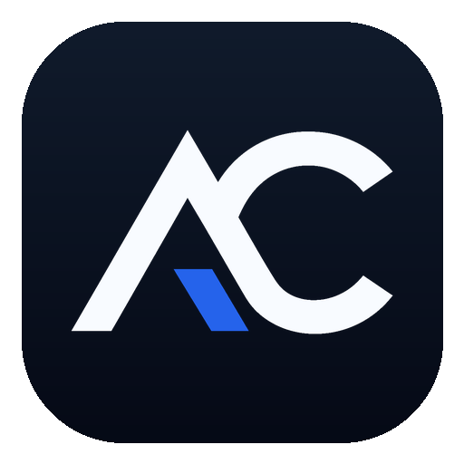

Menu degustazione mare
Quattro portate con pescato locale, fregola, verdure di stagione e abbinamento vini su richiesta.

Portfolio demo
Demo dimostrativa per ristoranti
Una landing premium per raccontare il ristorante, valorizzare i piatti migliori e guidare chi visita il sito verso una richiesta tavolo chiara e immediata.
Esperienza
Lume Osteria è una demo costruita per un ristorante mediterraneo moderno: visual caldi, copy concreto, menu leggibile e percorsi di contatto pensati prima per smartphone.
Il visitatore capisce subito cucina, atmosfera, fascia qualitativa, orari e prossima azione: prenotare, chiamare o chiedere informazioni.
Piatti firma
Visual
Luce morbida, materiali naturali, tavoli raccolti e un tono accogliente per comunicare qualità senza freddezza.
Ingredienti locali e vini sardi diventano argomenti visibili, non solo parole nascoste in fondo alla pagina.
Cena questa settimana?
Recensioni
“Cena curata dall’inizio alla fine. Sapori sardi, servizio attento e ambiente intimo.”
Martina R. Cena di coppia“Il menu è chiaro già dal sito: abbiamo prenotato dal telefono in meno di un minuto.”
Andrea P. Prenotazione mobile“Perfetto per far capire subito il livello del ristorante e la cura della proposta.”
Cliente business Evento privatoPerché questo sito funziona
CTA ripetute, orari, location e richiesta tavolo sono sempre raggiungibili senza far cercare informazioni al cliente.
Il design comunica qualità e calore, due leve fondamentali per ristoranti che vogliono differenziarsi.
Heading, title, description e contenuti includono cucina, territorio, servizi e intenti di ricerca locali.
FAQ
Sì, la pagina può raccogliere richieste per compleanni, anniversari, cene aziendali e menu personalizzati.
Sì, la struttura è pensata per modificare piatti, prezzi, stagionalità e CTA senza rifare il sito.
Sì, il flusso può portare a WhatsApp, email, telefono o a un sistema di prenotazione esterno.